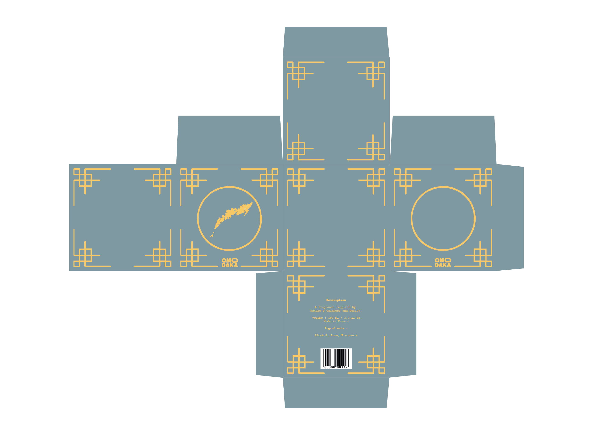
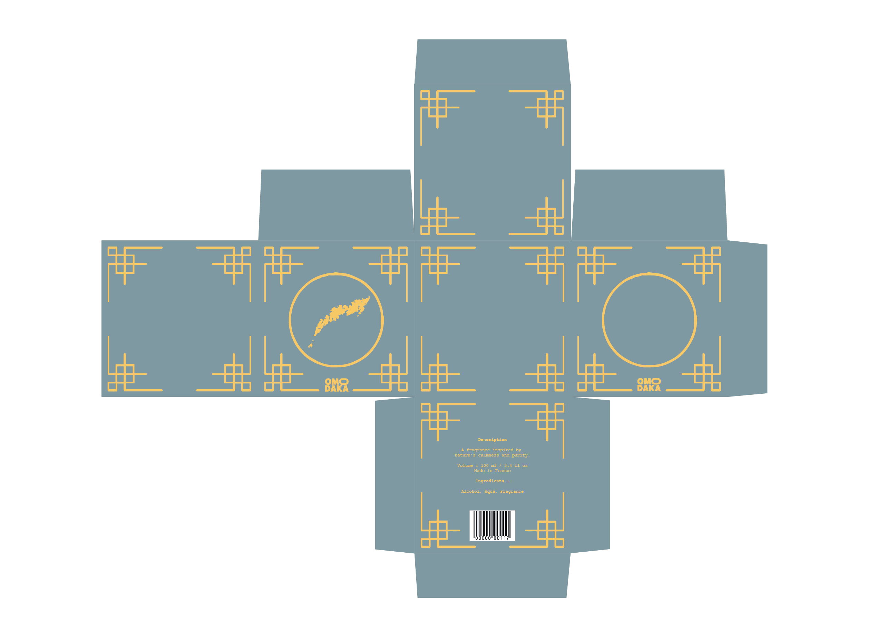
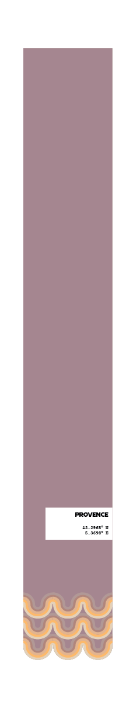
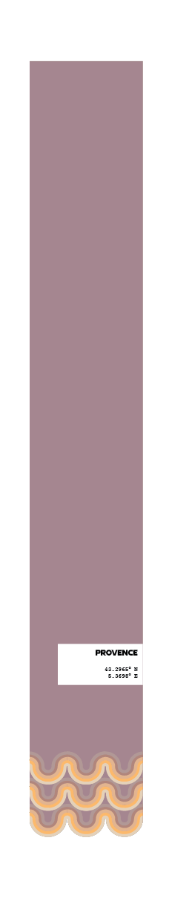

"Le voyage de mille lieues commence par un pas." — Lao Tseu
Omodaka est un projet que j'ai créé pour apporter sérénité et tranquillité à ceux qui cherchent refuge face au chaos de la vie quotidienne. Mon approche repose sur la conviction que le calme est essentiel au bien-être mental et émotionnel.
Le mot Omodaka vient du japonais (オモダカ), où il désigne une plante aquatique connue sous le nom de 'pied-d'arrow' (Sagittaria trifolia en latin). Cette plante, souvent trouvée dans des environnements paisibles tels que des étangs et des rivières, symbolise la tranquillité et la pureté de la nature. Le projet Omodaka s'inspire des paysages du monde entier, capturant l'essence de différents lieux à travers des fragrances uniques.
Chaque parfum reflète l'atmosphère et les émotions évoquées par ces régions, offrant une expérience sensorielle immersive. Chez Omodaka, chaque fragrance est créée pour vous emmener dans un voyage apaisant et sensoriel, vous permettant de vous reconnecter avec vous-même et la nature à travers l'odeur de ces paysages inspirants.


444.1075° N, 9.7361° E
- Italie

43.2965° N, 5.3698° E
- France

11.5564° N, 104.9282° E

68.2180° N, 13.6367° E
- Norvège
L'idée derrière chaque fragrance Omodaka vient de l'observation des couleurs naturelles des lieux choisis. Chaque région inspire non seulement une senteur, mais aussi des teintes spécifiques qui capturent son essence. Par exemple, la Provence évoque des tons lavande et dorés, tandis que les îles Lofoten, avec leurs paysages enneigés, inspirent des bleus glacés et des blancs purs. Cette approche permet à chaque fragrance de refléter l'atmosphère du lieu, offrant ainsi un voyage sensoriel à la fois visuel et olfactif.
La lettre "O" est déformée pour ressembler à un cercle, symbolisant une bouteille de parfum ou un contenant. Dans l'une des variations, ce "O" est positionné sous un rectangle, représentant un bord, duquel émergent des bâtons, similaires à ceux utilisés pour diffuser des senteurs. Ce détail fait directement référence à l'expérience sensorielle et à l'art de parfumer les espaces. La typographie reste minimaliste et élégante, créant un équilibre entre modernité et raffinement, tout en symbolisant l'atmosphère apaisante et l'harmonie que les produits apportent à la maison.


L'emballage d'Omodaka a été conçu pour évoquer sérénité et élégance, en harmonie avec l'essence de la marque. J'ai choisi une forme cubique pour la boîte, symbolisant la simplicité et l'équilibre, des valeurs profondément ancrées dans la culture japonaise. Ce design minimaliste s'inspire des éléments traditionnels japonais, qui mettent en valeur la beauté de la simplicité et l'harmonie des formes.
Une bande autour de la boîte ajoute une touche de sophistication tout en créant un sentiment de protection, reflétant l'idée de refuge et de calme que nous souhaitons offrir à nos utilisateurs. La carte de l'emplacement sur la boîte rend hommage aux paysages inspirants qui ont guidé la création de chaque fragrance, permettant aux utilisateurs de s'embarquer dans un voyage sensoriel. Cette carte renforce l'immersion et le concept d'évasion vers des lieux emplis de tranquillité.
 



 


1.Boîte principale – La structure principale contenant le produit.
2.Bande périphérique – La bande entourant la boîte.
Que cette création éveille votre inspiration. (• ◡•)